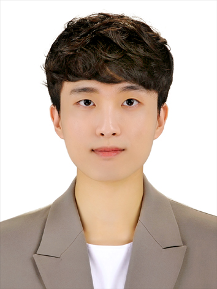

Changhyun Choi
Pronunciation: [Chahng-hyuhn Chweh]
("Chahng" with "a" as in "father", "hyuhn" as in "Hyundai", "Chweh" rhymes with "way")
I am a master`s course student in the Lab for Autonomous Robotics Research (LARR) at SNU IPAI (Seoul National University Interdisciplinary Program in Artificial Intelligence), advised by Prof. H. Jin Kim.
I received my B.S. degree in Mechanical Engineering from Yonsei University(Cum Laude, ranking 7th out of 141 students).
Representative news items are highlighted.
Colors are used to categorize different types of news: red for papers, blue for projects, green for awards, and gray for other news(e.g., experiences).

News
09.2026
- Career: After completing my master’s degree, I will join a robotics-related organization within Samsung Electronics’ DX division. I am excited to build my career based on the valuable experiences I gained during graduate school.
- ITSC 2026: One paper has been accepted to ITSC 2026.
(LAMP: Lane-Aligned Motion Primitives for Feasible Trajectory Prediction / Sangjin Han, Hoseong Jung, Her Jeongtae, Changhyun Choi, H. Jin Kim)
08.2026 (Since 03.2025)
- Manned-Unmanned Aircraft Collaboration: We are currently conducting research with ADD (Agency for Defense Development) to achieve efficient collaboration between human pilots and unmanned aircraft using various AI methodologies.
09.2025 (Since 09.2024)
- Parameter Tuning for Transferring Base Vehicle Driving Characteristics to Derivative Vehicles: We conducted research with Hyundai Motor Group to develop a method that, given a vehicle with arbitrary parameters, uses MAML (a form of meta-reinforcement learning) to accurately achieve target accelerations at various speeds under specific APS conditions. This approach effectively transferred the driving characteristics of a base vehicle to its derivative models.
03.2025 (Since 03.2024)
- AI Virtual Aircraft Air-to-Air Combat: We collaborated with KAI (Korea Aerospace Industries), employing multi-agent reinforcement learning, to increase the win rate of AI-operated virtual aircraft in air-to-air combat.
12.2024
- KSC 2024: I attended the Korea Software Congress 2024 and presented two papers.
(Noise Generation using Noise-Selecting GFlowNet for Preference Alignment of Diffusion Models / Changhyun Choi, H. Jin Kim)
(Survey on Generative Flow Network / Changhyun Choi, H. Jin Kim)
11.2024 (Since 09.2023)
- Swarm Unmanned Surface Vehicle (USV) Defense Mission: We collaborated with ADD (Agency for Defense Development), using multi-agent reinforcement learning, to develop a mission where multiple friendly unmanned surface vehicles intercept and eliminate incoming enemy forces at sea before they reach their designated destination.
01.2024
- Personal Project: I carried out a project that applied MCdropout to enable adaptive vehicle movement under uncertain position estimates. I used the Pure Pursuit algorithm to calculate the steering angle.
08.2022 (Since 07.2022)
- Research Intern: I worked as a research intern at the ML Lab(POSTECH), advised by Prof. Jungseul Ok. Although the short duration limited my results, I learned how to conduct research thanks to the guidance of the professor and lab members.
12.2021 (Since 01.2021)
- Club: At Yonsei University, I served as the president of SBTM, an autonomous driving club. Due to COVID-19, we were unable to host many in-person events, but we organized virtual seminars and worked on various projects. Ultimately, we won the AIM (AI & IoT for Mobility) Club Contest, and a patent attorney deemed one of our ideas potentially patentable.
10.2019 (Since 02.2018)
- Military Service: I completed my military service at the Korea Combat Training Center (KCTC), serving as part of an opposing force to help train the Republic of Korea Army in realistic combat scenarios.
Profile inspired by Jon Barron's website
{kind=link}